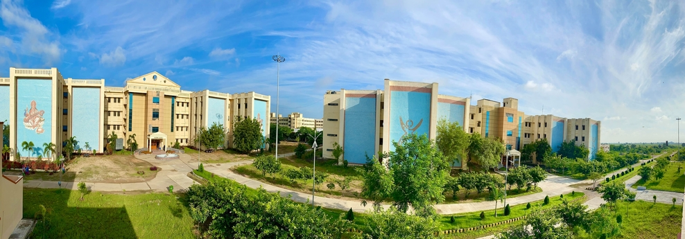

About RGUKT Basar
RGUKT Basar, located in Telangana, India, is an autonomous institution established to provide high-quality education to talented rural youth. The institute specializes in integrated undergraduate programs and aims to foster academic excellence and innovation.

Establishment
RGUKT was established in 2008 by the Government of Andhra Pradesh to provide education to meritorious rural students. The institution was conceived to address the lack of access to quality higher education in rural areas. Over the years, it has grown to become a premier institute for technical education.
Branches
- RGUKT Basar, Telangana
- RGUKT Nuzvid, Andhra Pradesh
- RGUKT RK Valley (Idupulapaya), Andhra Pradesh
- RGUKT Ongole, Andhra Pradesh
Programs Offered
| Program | Duration | Description |
|---|---|---|
| Integrated B.Tech Program | 6 Years | A comprehensive program combining PUC and B.Tech. |
| Postgraduate Programs | 2 Years | Advanced specialization in various engineering disciplines. |
| PhD Programs | Varies | Research-oriented programs in cutting-edge technologies. |
Campus Facilities
- Modern Classrooms
- Well-equipped Laboratories
- Library with Digital Resources
- Hostel and Dining Facilities
- Sports and Recreation
Admission Process
The admission process at RGUKT Basar is based on merit, primarily considering the performance in the 10th-grade examinations. Special provisions are made to ensure opportunities for students from rural backgrounds.
- Eligibility: Students must have completed their 10th grade with high academic performance.
- Application: Applications can be submitted online through the official RGUKT Basar website.
- Selection: A merit list is prepared based on 10th-grade marks, with reservations as per government norms.
Study Curriculum
The integrated curriculum at RGUKT Basar includes a blend of pre-university courses and engineering education. The structure is designed to provide a strong foundation in science and technology while fostering critical thinking and innovation.
- Pre-University Courses: Cover core subjects like Mathematics, Physics, Chemistry, and introductory programming.
- Engineering Education: Advanced courses in various engineering disciplines, practical lab sessions, and project work.
- Soft Skills: Communication and leadership training to prepare students for global challenges.
- Research Opportunities: Hands-on research projects and collaboration with industry experts.
About Us
Established in 2008, RGUKT Basar focuses on providing education to rural youth through an innovative approach. Our mission is to create leaders and innovators for a better tomorrow.
Contact Information
Address: RGUKT Basar, Basar, Telangana, India
Phone: +91-1234567890
Email: info@rguktbasar.ac.in